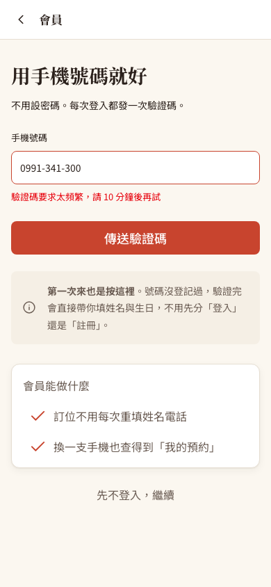
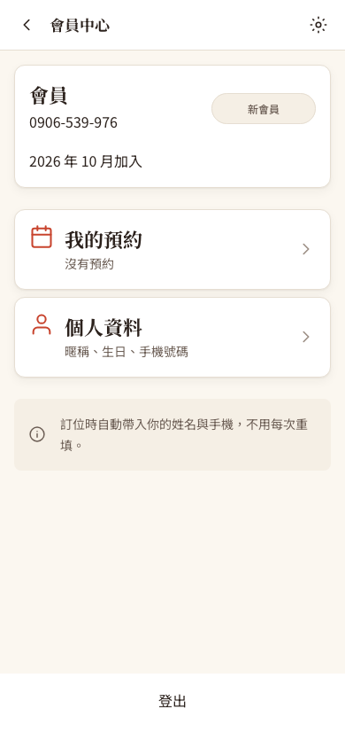

一個並發問題、兩個流程錯誤、四個補上的功能
- P1 驗證碼可重複使用、錯誤次數算不準：同時送出的驗證請求會互相蓋掉狀態。
- 會員登入 1 小時就失效：規格是 7 天。
- 「先不登入」走不通：登入頁連到不存在的網址，驗證碼頁的按鈕點了沒反應。
- 補上的基本功能：同一支手機 10 分鐘最多要 3 次碼、過期驗證碼清理排程、會員中心拿掉假的點數入口、後台登入守門與登出。
依據 M8 會員規格 8.1–8.7。開發／展示模式把驗證碼直接顯示在畫面（模擬簡訊）是規格允許的做法，保留不動。
驗證碼要守住三條規則
M8 規格 8.3 寫：驗證碼 6 位數、5 分鐘有效、錯 3 次作廢；8.4 寫：同一支手機 10 分鐘最多要 3 次碼。這些規則是為了擋住「一直猜」：6 位數有一百萬種組合，如果可以無限次猜，總有一天會猜中。
規則本身很簡單，難的是：手機網路不穩時客人會連按，攻擊者也可以一次同時送出很多請求。規則必須在「很多請求同時到」的時候也成立。
先讀再改，中間被插隊
原本驗證的流程是：讀出這支手機最新的驗證碼 → 檢查有沒有用過、有沒有過期、錯幾次了 → 比對 → 改成「已使用」或「錯誤次數 +1」再存檔。這些步驟沒有包在交易裡，也沒有加鎖。
兩個請求都讀到「還沒使用」，都比對成功，都拿到登入憑證（JWT）。「一組碼只能用一次」失效。
三個請求都讀到「錯 0 次」，各自加一後存回「錯 1 次」。資料庫最後只記 1 次，攻擊者可以一直這樣猜下去。這就是「遺失更新」。
另外：會員登入憑證和其他憑證共用「1 小時」的有效期，但規格要 7 天，客人隔天打開「我的預約」就被登出；登入頁的「先不登入，繼續」連到 /order/checkin，但路由只有 /order/checkin/桌號，點了是空白頁；驗證碼頁同名的連結沒有設定去處，點了沒反應。
同一支手機的請求，排成一條隊
1. 每支手機一把鎖
新增一張很小的表 verification_phone_lock，每支要過碼的手機一列，用來當「這支手機的鎖」。
- 要碼時：用
INSERT … ON DUPLICATE KEY UPDATE：新手機就新增一列，已經有的就更新它。兩種情況都會拿到這一列的獨佔鎖，拿到之後才數「10 分鐘內要過幾次」。 - 驗碼時：用
SELECT … FOR UPDATE鎖同一列，拿到鎖後才讀驗證碼、比對、更新。 - 交易使用
READ_COMMITTED：排隊等到鎖之後，讀得到前一個請求剛存好的「已使用」或「錯 2 次」。
結果：同一組正確的碼同時送兩次，第二個會看到「已使用」；三組錯的碼同時送，錯誤次數一定記到 3、驗證碼作廢；5 個要碼請求同時送，最多 3 個成功。
為什麼不用 INSERT IGNORE 再 SELECT … FOR UPDATE？
INSERT IGNORE 遇到重複時只拿「共享鎖」。兩個請求各拿一把共享鎖，接著都想升級成獨佔鎖，就會互相等待，變成死結。ON DUPLICATE KEY UPDATE 遇到重複時直接要獨佔鎖，大家照順序排隊，不會卡死。這是實作者在設計時特別比較過的細節。
2. 驗證和建立會員在同一個交易
驗證成功、標記「已使用」、第一次登入時建立會員，全部在同一個交易裡完成：中間出錯就全部取消，不會出現「驗證碼用掉了，會員卻沒建好」。
但有一個例外要處理：打錯碼時，系統要回錯誤給前端，同時「錯誤次數 +1」又必須存檔，否則就等於沒算。所以交易設定成「遇到業務錯誤（ApiException）時仍然存檔」；資料庫錯誤等其他例外照樣全部取消。程式裡有註解提醒之後的人不要在這個方法裡寫完資料又丟業務錯誤。
3. 會員登入 7 天、員工維持 12 小時
JWT 工具新增「可以指定有效期」的版本，會員登入改用 7 天；員工登入有自己的 12 小時設定，沒有受影響。
4. 「先不登入」回到原本的地方
- 從訂位頁選「登入／註冊會員」進來 → 回到直接訂位（C-16b）。
- 從「我的預約」進來 → 回到我的預約。
- 直接打開登入頁 → 回到首頁。
- 驗證碼頁按「改號碼」回登入頁時，來源也一起帶回去，不會走著走著就忘了是從哪裡來的。
限流、清理、假入口、後台守門
- 限流：同一支手機 10 分鐘內第 4 次要碼，回
429 TOO_MANY_ATTEMPTS，並告訴前端還要等幾秒（retryAfterSeconds，也放在Retry-After標頭）。登入頁與驗證碼頁的按鈕會變成「9:58 後可以再傳送」並停用；換一支號碼不受影響。驗證碼頁也新增了「重新傳送」。 - 清理排程：每 10 分鐘刪掉已過期或已使用、而且建立超過 10 分鐘的驗證碼。之所以要等超過 10 分鐘，是因為限流還要靠這些紀錄計數；刪太早，限流就失效了。
- 會員中心：M8 規格寫明基礎版不顯示「消費紀錄」與「點數與優惠券」。原本畫面上的「1,248 點・1 張券可用」是寫死的假資料，點了只會回會員中心，直接移除。
- 後台守門與登出：原本直接打開
/admin/table_overview會先看到後台畫面，等 API 回 401 才被趕走；側欄也沒有登出。現在沒有員工憑證就直接導到登入頁（叫號螢幕也一樣，因為它也需要員工身分才能收推播）；側欄新增「登出」，會清掉憑證和店家端的快取。前端守門只是讓體驗正確，真正的權限仍由後端檢查。
獨立審查另外提出三個小改進，都已處理：驗證碼頁的「確認」和「重新傳送」不能同時按（否則新的驗證碼還沒輸入就被扣一次機會）；登出時一併清掉出菜看板的快取；升級說明寫清楚要先停舊版後端再執行升級腳本。
主要程式檔案
backend/src/main/java/tw/ispan/smartorder/service/MemberAuthService.java：要碼限流、驗證、建立會員、清理。backend/src/main/java/tw/ispan/smartorder/repository/VerificationCodeRepository.java：鎖定、計數與清理的查詢。backend/src/main/java/tw/ispan/smartorder/scheduler/VerificationCodeScheduler.java：每 10 分鐘的清理排程。backend/db/schema.sql、backend/db/migrate_member_otp.sql：鎖表與升級腳本。frontend/src/features/customer/member/MemberLogin.jsx、VerifyCode.jsx、Center.jsx、frontend/src/hooks/member/useRetryCountdown.ts：登入、倒數、會員中心。frontend/src/layouts/admin/RequireEmployee.tsx、frontend/src/components/dashboard/SideBar.tsx：後台守門與登出。
你可以照著做一次
先重現問題（修正前的版本）。已經是會員的手機，同一組正確的碼同時送兩次：兩個都成功登入（3 輪都是）。如果是第一次登入的新手機，第二個請求反而會因為「同時建立兩位相同手機的會員」撞到唯一索引而失敗，問題被另一個錯誤蓋住了，所以一定要用既有會員測。三組錯的碼同時送：資料庫只記 1 次（3 輪都是）。5 個要碼同時送：全部成功。會員憑證的有效期是 3600 秒（1 小時）。
同時操作（修正後，各跑 2～3 輪）。5 個要碼同時送 → 3 個 200、2 個 429，資料庫正好 3 筆；同一組正確碼同時送 2 次（新手機與既有會員各 3 輪）→ 一個 200、一個 400，會員只建一位；3 組錯碼同時送 → 錯誤次數 3，之後連正確的碼也回「驗證碼已失效」。
其他規則。第 4 次要碼回 429 並附剩餘秒數；換一支手機不受影響；手機格式錯誤回 400；錯一次回「還可以再試 2 次」；過期的碼被拒；沒要過碼直接驗證被拒；用過的碼不能再用；會員憑證 7 天、員工 12 小時。
清理排程。在排程執行前插入一筆 40 分鐘前建立、已過期的碼，和一筆 6 分鐘前建立、剛過期的碼；排程跑完後，前者被刪掉，後者因為還在限流的 10 分鐘內而保留。
瀏覽器。沒登入員工打開後台三個頁面（含叫號螢幕）都被導到登入頁；登入後按「登出」會清掉憑證。三種「先不登入」都回到正確的地方；驗證碼頁可以重新傳送；被限流的號碼看到倒數、按鈕停用；會員中心沒有假的點數與消費紀錄。
升級腳本。在舊結構的資料庫上連續執行兩次，都成功，既有的手機也補進了鎖表。
提交與驗證紀錄
程式版本：Git commit 6c5c17b。
HTTP 與資料庫檢查
會員驗證專項 39 項全部通過，另有基線 36 項；紀錄裡附上修正前版本的重現結果（11 項中 8 項失敗，正是要修的問題；通過的 3 項是新手機那組，原因見上方第 1 步）與清理排程的檢查。查看完整 HTTP 紀錄。
瀏覽器操作檢查
15 項全部通過，包含後台守門、登出、三種「先不登入」去處、重新傳送、限流倒數與會員中心。查看完整瀏覽器紀錄。




測試在隔離的 MySQL 5.7 容器進行；驗證碼從測試資料庫讀出，沒有發送任何簡訊。最終驗證是在已合併「同桌身分憑證」的同一份程式上重跑。獨立高風險審查沒有 P1／P2，四個 P3 中三個已修正；第四個是規格文件 docs/spec/03-資料庫設計.md 還沒補上新的鎖表，屬於文件同步，另外處理。
前輩回饋、報告與履歷
技術前輩的建議
跟安全有關的計數（錯誤次數、要求次數），一定要假設「會同時來很多個」。只要程式是「讀出來、改一改、存回去」，就要問：中間如果有別人插隊會怎樣？答案通常是加鎖，或改成資料庫一句話完成的條件式更新。
選鎖的時候，也要知道不同 SQL 拿的是什麼鎖：同樣是「沒有就新增」，INSERT IGNORE 和 ON DUPLICATE KEY UPDATE 在並發時的行為完全不同。這種細節正是面試很愛問的。
這個功能用到的技術
- 手機 OTP 登入、JWT 有效期設計（會員 7 天、員工 12 小時）
- MySQL 資料列鎖、
INSERT … ON DUPLICATE KEY UPDATE的鎖行為與死結避免 - 交易隔離層級
READ_COMMITTED、noRollbackFor的取捨 - 請求限流與 HTTP 429、
Retry-After - Spring 排程清理資料、不刪掉仍在限流視窗內的紀錄
- React 倒數 hook、路由守門與登出清快取
專題報告與履歷可以這樣寫
報告：先用修正前的版本示範「同一組碼同時送兩次，兩個都登入成功」，再畫出兩個請求交錯的時間線，最後示範加鎖後只有一個成功。接著展示倒數畫面與「10 分鐘最多 3 次」。
履歷：「負責餐廳系統會員手機驗證碼登入：以每支手機一把資料列鎖序列化要碼與驗碼，修正驗證碼可重複使用與錯誤次數遺失的並發問題；實作請求限流（HTTP 429 與倒數）、過期驗證碼清理排程與後台登入守門。」
新手名詞表
- OTP（One-Time Password，一次性密碼）
- 手機收到的 6 位數驗證碼，只能用一次、有效期 5 分鐘。
- JWT（JSON Web Token，JSON 網頁權杖）
- 登入成功後拿到的憑證，裡面記著「你是誰、什麼時候過期」，並有簽章防止竄改。
- 限流（rate limiting）
- 限制同一個來源在一段時間內能做幾次某件事，例如同一支手機 10 分鐘最多要 3 次碼。
- HTTP 429 與 Retry-After
- HTTP 是 Hypertext Transfer Protocol（超文字傳輸協定）。429 代表「太頻繁了」；
Retry-After標頭告訴前端要等幾秒才能再試。 - 並發（concurrency）與競態（race condition）
- 很多請求同時處理就是並發；它們互相插隊、讓結果出錯就是競態。
- 遺失更新（lost update）
- 兩個請求讀到同樣的舊值、各自修改後存回，後存的蓋掉先存的，其中一次修改就不見了。
- 交易（transaction）與 rollback
- 交易把一組資料庫操作當成一次完整的動作；rollback 是出錯時把這組操作全部取消。
- 資料列鎖、共享鎖、獨佔鎖
- 鎖住某一筆資料。共享鎖可以多人一起拿（大家都只讀）；獨佔鎖同時只有一人拿（要改資料）。
- 死結（deadlock）
- 兩個請求各拿著一把鎖，又在等對方手上的鎖，誰都無法繼續。
- INSERT … ON DUPLICATE KEY UPDATE
- MySQL 的寫法：「新增這筆；如果主鍵已經存在，就改成更新它」，兩種情況都會拿到獨佔鎖。
- READ_COMMITTED（讀取已提交資料）
- 資料庫隔離層級的一種：每次查詢都讀得到其他交易已經存檔的最新結果。
- 排程（scheduler）與 cron
- 定時自動執行的程式；cron 是描述時間的寫法，
0 */10 * * * *是每 10 分鐘。 - 路由守門（route guard）
- 進入某些頁面前先檢查條件（例如有沒有登入），不符合就導到別頁。這只是使用體驗，真正的權限要在後端擋。
- C-12／C-14／C-16b
- UI（User Interface，使用者介面）規格的畫面編號：C-12 會員登入、C-14 會員中心、C-16b 直接訂位。
- migration（資料庫升級腳本）
- 把正在使用的資料庫升級成新結構的腳本；本案的腳本可以重複執行。
- SHA／Git commit
- SHA 是 Secure Hash Algorithm（安全雜湊演算法）；Git 用它幫每個版本（commit）產生識別碼。